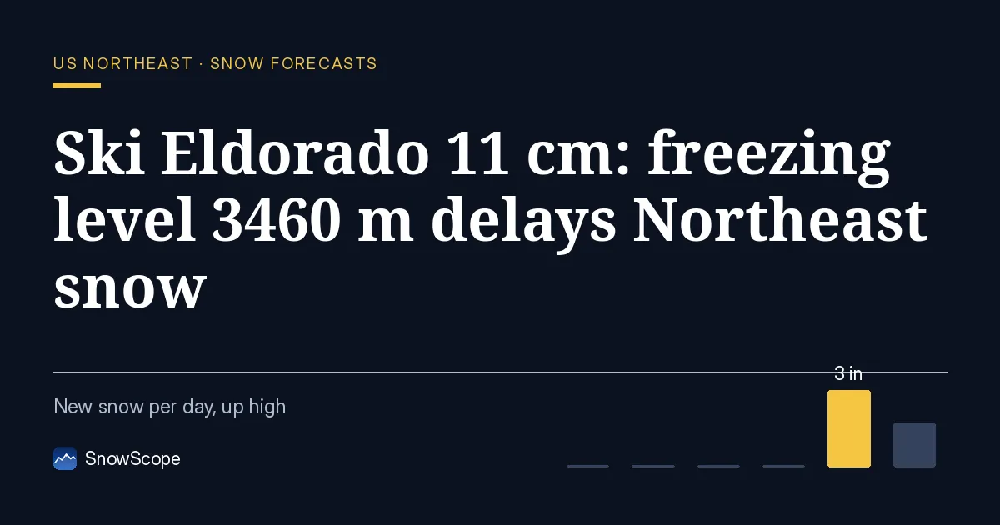
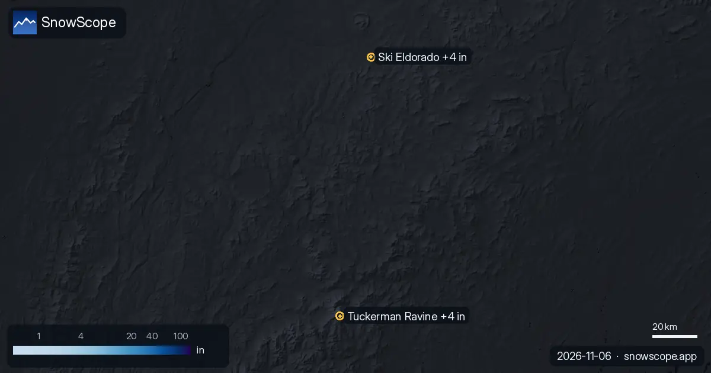

Ski Eldorado 11 cm: freezing level 3460 m delays Northeast snow
Ski Eldorado leads the Northeast with 11 centimetres of new snow forecast, but there is a catch: the freezing level today is 3460 metres, more than three kilometres above the summit at 797 metres. The maths is merciless - rain falls, not snow. By November 8th the air cools enough that the freezing level drops to around 720 metres, and the snow arrives.
See the live snow forecast for Ski Eldorado in the SnowScope appSnow depth, powder alerts and the 3D map, free.
No snow while freezing level dominates at 3460 metres
Today the freezing level reaches 3460 metres at its peak. Ski Eldorado's summit is 797 metres. When the freezing level is higher than the mountain, precipitation is rain, not snow - a rule with no exceptions. This is the Northeast on November 6th and 7th. The forecast model shows zero centimetres of new snow on November 7th because all precipitation falls as rain. Satellites and ground measurements confirm it. Ski Eldorado last appeared snow-free on November 1st. A station near Tuckerman recorded zero centimetres on November 2nd at 372 metres elevation. The pattern is locked: rain everywhere until the air cools enough for snow to begin at the summits.
The region forecast underscores the problem. Out of 111 Northeast resorts, zero have snow today. By November 9th, only 11 are forecast to see any snow at all. That is not a broad event; it is a high-mountain event.
| Resort | Snow depth | New snow, 72 h | Coming, next days | Top |
|---|---|---|---|---|
| Ski Eldorado | 0 in (0 cm) | 0 in (0 cm) | 4 in (11 cm) | 2,615 ft (797 m) |
| Tuckerman Ravine | 0 in (0 cm) | 0 in (0 cm) | 4 in (10 cm) | – |

Freezing level collapses November 8th, snow arrives
On November 8th the freezing level crashes. The model shows it dropping from roughly 2290 metres to a minimum of 720 metres by early morning - a swing of over 1500 metres in hours. When cold air moves in this sharply, snow replaces rain. Ski Eldorado's forecast shifts from zero centimetres on November 7th to 7 centimetres on November 8th. The freezing level bounces back up to 2450 metres by afternoon (not uncommon in transitional weather), but by then snow has already accumulated on the summits.
November 9th continues. The freezing level stays lower, estimated around 1500 metres. The forecast adds another 4 centimetres. This gives Ski Eldorado its 11-centimetre total: nothing through November 7th, all of it November 8th and 9th. The highest elevations receive slightly more (forecast 5 centimetres over the next week) than mid and base slopes (4 centimetres each) because the freezing level only dips below each zone briefly.
Only the Northeast's highest peaks see snow
Tuckerman Ravine follows closely with 10 centimetres forecast. Beyond those two, the signal fades. The model predicts just 11 resorts across all 111 in the Northeast will record measurable snow by November 9th - fewer than one in ten. The snow-covered area is forecast to reach 460 square kilometres, which sounds substantial until you realise it reflects summits only, not full resorts. Lower valleys and warmer aspects will stay bare through this event.
What satellites and stations see on the ground
The satellite data is thin but telling. Ski Eldorado last appeared cloud-free on November 1st: no snow. Tuckerman's latest clear view is older, October 27th, also showing no significant coverage at that time. Ground stations agree. Jackson, 9 kilometres from Tuckerman at 372 metres elevation, measured zero centimetres on November 2nd and saw no new snow in the past three days. All sources point the same way: the Northeast has no snow on the ground today. The first measurable snow visible to satellites should appear on the summits by November 8th or 9th if the forecast model holds true.
Early-season snow is thin and demands respect
November 7th is a washout - rain at all elevations. November 8th is when the action happens: snow reaches the summits of Ski Eldorado and Tuckerman and a handful of other high peaks, but do not expect much. Expect thin coverage, weak bonding between fresh snow and the icy ground underneath, and rocks poking through. By November 9th things are more stable. Eleven centimetres on the upper slopes of leading resorts gives real terrain, but lower elevations remain mostly bare.
If you venture off-piste during this transition, check the official avalanche bulletin for your region. Early-season snow often settles poorly on ice or wet surfaces, trapping weak layers and hiding rocks. The 11 centimetres is real, but conditions are unforgiving for a few days.
Tips for skiers
- November 7th is rain everywhere; stay at base elevation or off the mountains.
- November 8th: watch for snow to arrive on summits around 720 metres freezing level; expect thin coverage and unstable bonding on ice.
- Check official avalanche bulletin before going off-piste; early-season weak layers form quickly when cold snow lands on wet ground.
- By November 9th, 11 centimetres on upper slopes of leading resorts offers safer skiing; lower terrain stays bare.
- These early snows are fragile - rocks may protrude through 11 centimetres, especially on lower terrain where the base is thin.
About these numbers
Resort snow depths are the deepest snow on the resort's upper slopes from the SnowScope snow model (about 1 km, run of 6 November); they are estimates for an area, not a measurement at one point. Station values are measurements on the date shown. Forecasts can change. Always read the official avalanche bulletin before going off-piste.
Official avalanche bulletins: Mount Washington Avalanche Center
Cite this report
For research, teaching or the press: the numbers and charts are free to reuse under CC BY 4.0 with this citation.
SnowScope (2026), Ski Eldorado 11 cm: freezing level 3460 m delays Northeast snow, https://snowscope.app/blog/en/2026/11/us-northeast-snow-forecast-6-november-2026.html, accessed 2026-11-06
SnowScope (Atlas Labs). (2026, November 6). Ski Eldorado 11 cm: freezing level 3460 m delays Northeast snow. SnowScope snow reports. https://snowscope.app/blog/en/2026/11/us-northeast-snow-forecast-6-november-2026.html
BibTeX
@misc{snowscope2026usnortheastsnowforecast6,
author = {{SnowScope (Atlas Labs)}},
title = {Ski Eldorado 11 cm: freezing level 3460 m delays Northeast snow},
year = {2026},
month = nov,
howpublished = {\url{https://snowscope.app/blog/en/2026/11/us-northeast-snow-forecast-6-november-2026.html}},
note = {Published 2026-11-06 14:00 UTC; accessed 2026-11-06}
}· CC BY 4.0 · Methods, data and tools →
Ski Eldorado: snow and temperature by height, this winter vs last (tools) →
Follow Ski Eldorado
Free: a message when fresh snow is coming, and the forecast every morning.
More snow reports

Whistler Blackcomb forecast: 74 cm in 72 hours; weeks 13, 12, 11 bring the year's deepest snow historically. Forecast from 5 November.

Where will it snow in the US Northeast between 13 November and 26 November, and how much? We asked the two global models that reach two weeks, ECMWF …

On November 10, the freezing level reaches 5,313 ft (1,620 m) above Northeast summits, bringing rain before 20–25 cm of snow arrives.